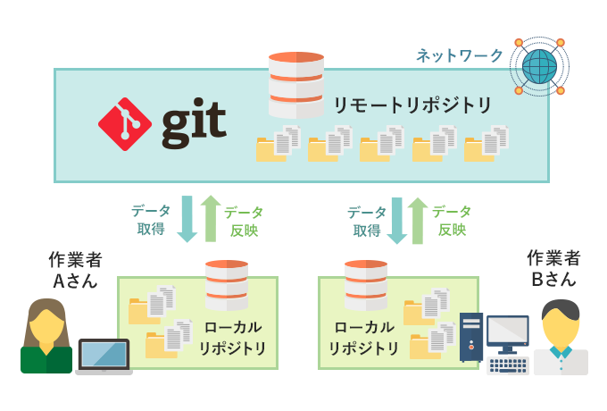
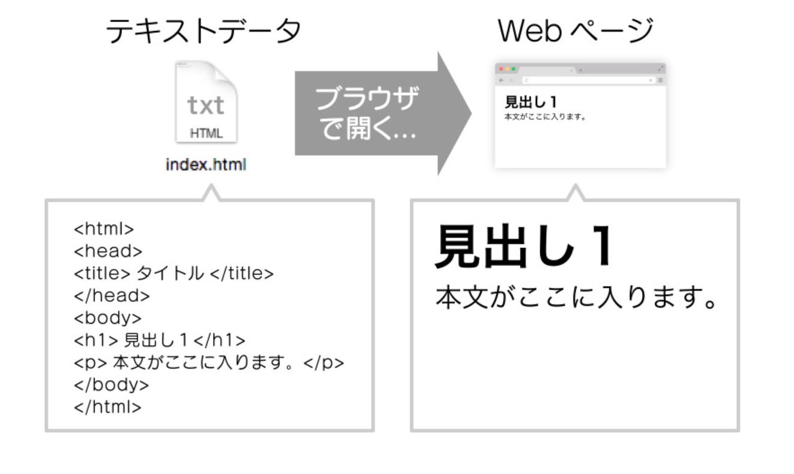
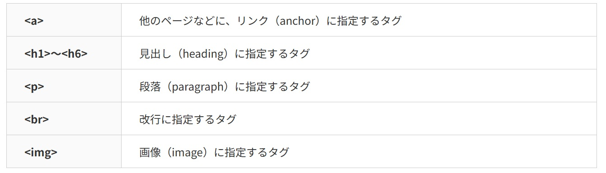

gitとhtmlについて
gitとは
gitとは分散型のバージョン管理で、誰もが自分のパソコンに
本体リポジトリ（共有リポジトリ）と同じ情報をコピーすることができ、
更新履歴も分かるため共同編集がしやすく、従来の集中型バージョンでは
更新作業にインターネットが必要だったところをgitを使うことによって
ローカル環境でも更新作業を行うことができるようになった。

参考文献
（GMOクラウドアカデミー＞用語辞典＞Gitとは？）
htmlとは
HTMLとは、Hyper Text Markup Language（ハイパー テキスト マークアップ ランゲージ）
の略で、Webページを表示するための言語です。

参考文献
（Webデザイン初心者の独学情報サイト
Webデザインのきほん
＞HTMLとは？
HTML＝テキストデータ）
htmlタグ
タグには以下のような種類があり、
タグ付けすることによって検索エンジンに
見つけてもらいやすくすることができます。

参考文献
（Webデザイン初心者の独学情報サイト
Webデザインのきほん＞HTMLタグの主な種類）